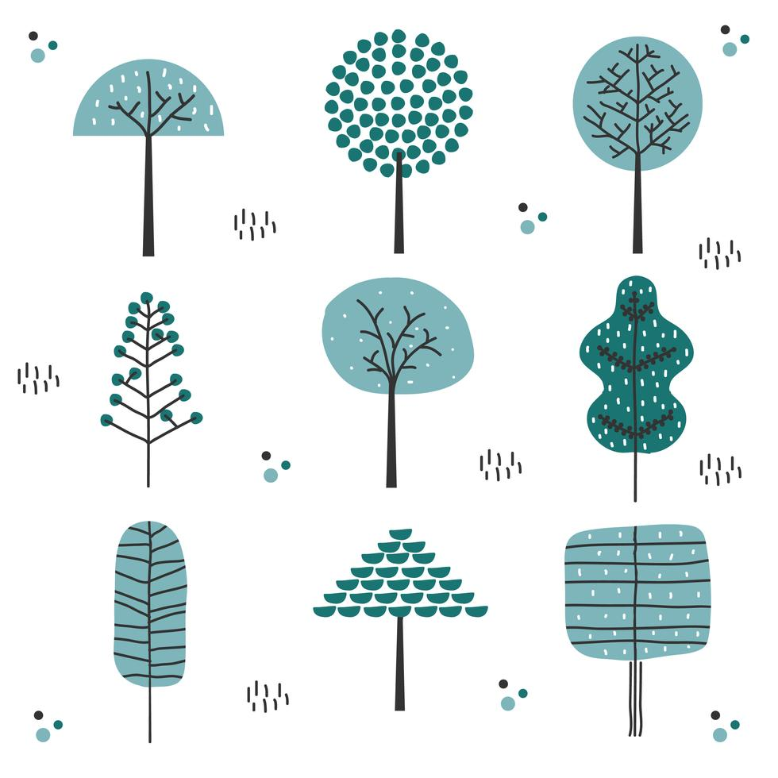
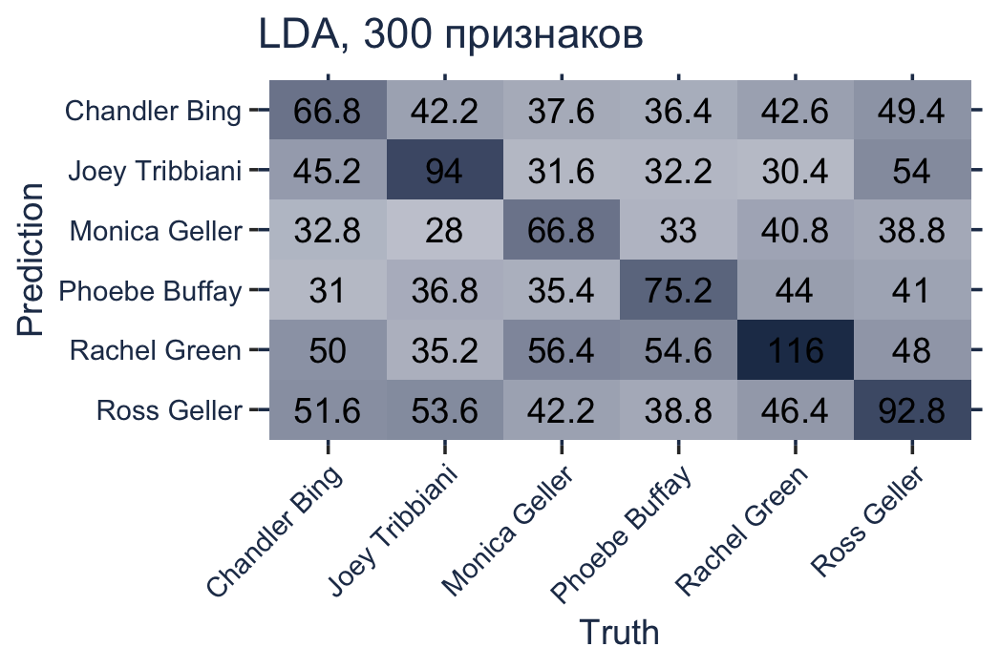

[1] 0.604888Стилометрия
Ольга Алиева
2024-05-17
План лекции
- Стилометрия: начало
- Случай “Федералиста”: NB & LDA
- Метод Delta (и вариации)
- Delta + МО = KNN
- Обучение без учителя
- Заглядывая в черный ящик
- Что дальше
1 Стилометрия: начало
1851: шведский математик и логик Огастес де Морган предположил, что споры о подлинности Послания к евреям святого ап. Павла можно разрешить путем измерения средней длины слов.
1887: Американский геофизик Томас К. Менденхолл проверил гипотезу о том, что длина слов может быть отличительной характеристикой писателей. Он изложил свои идеи в журнале Science.
1859: изобретен спектральный анализ
1901: Менденхолл публикует статью в Popular Science Monthly, в которой показывает, что “характеристическая кривая” Кристофера Марлоу…
…совпадает с Шекспиром примерно так же, как Шекспир совпадает с самим собой.
Тем временем в Европе…
1867: Льюис Кэмпбелл в предисловии к изданию “Софиста” и “Политика” датирует эти диалоги поздним периодом творчества Платона, опираясь на ряд количественных признаков.
1888: К. Риттер впервые собрал десятки различных признаков стиля, таких как вопросоответные формулы, частотность отдельных частиц, и т.п. Но у него нет инструментов многомерного анализа.
1897: Винценты Лютославский, обобщая предыдущие исследования, вывел “Закон стилистической близости”: \(A = x1 + 2 \times x2 + 3 \times x3 + 4 \times x4\)

Развитие статистических методов:
1939: Кембриджский статистик Д. У. Юл сравнил распределение длины предложения в работах Ф. Бэкона, C. Кольриджа, Ч. Лэма и Т. Б. Маколея и пришел к выводу, что авторское распределение длины предложений остается постоянным в довольно узких пределах.
1944: “характеристика Юла” для определения авторства трактата Imitatio Christi Фомы Кемпийского, который иногда приписывался канцлеру Парижского университета Жану Жерсону.
…в период между Менденхоллом и Юлом сама дисциплина статистики получила огромное развитие. Когда Менденхолл писал свои работы, еще не было устоявшихся методик, позволяющих определить, когда различия между разными явлениями являются существенными, а когда — просто результатом случайных колебаний… Еще не было четкого понимания, когда обобщения о больших совокупностях можно смело основывать на изучении сравнительно небольших выборок. — Э. Кенни (The Computation of Style, 1982)
Метод кумулятивных сумм
Громкие “открытия” (и разоблачения)
1971: Э.Мортон и А.Винспир используют cumsum для исследования платоновского корпуса (It’s Greek to the Computer).
1978: Э.Мортон (Literary Detection) приходит к выводу, что только 4 послания ап. Павла являются подлинными.
1993: Неудачное выступление Мортона на британском телевидении.
Выводы раздела 1:
- недостаток первых экспериментов в области стилометрии - нет многомерного анализа;
- развитие метода связано с развитием статистики, а затем и вычислительных машин;
- установлена важность mfw для классификации.
2 Случай “Федералиста”
Спорный случай: “Записки федералиста”
1963: американские статистики Ф. Мостеллер и Д. Уоллес опубликовали статью “Inference in an Authorship Problem”», в которой успешно разрешили вопрос о том, кто написал 12 спорных памфлетов из “Записок федералиста”.
Но главная их заслуга не в этом.
Сегодня “наивный Байес” применяется для фильтрации спама и при определении эмоциональной тональности документов.

Дискриминантный анализ позволяет классифицировать объекты по двум или более группам, основываясь на линейной комбинации переменных, которая называется дискриминантной функцией:
\[DF = -0.5\times var_1 + 1.2\times var_2 + 0.85\times var_3\] Дискриминантная функция максимизируют различия между группами и минимизует дисперсию внутри группы по формуле: \(\frac{(\bar{x_1}-\bar{x_2})^2}{s^2_1+s^2_2}\).
Как это работает
NB: Современные имплементации алгоритма отличаются от метода, предложенного Р. Фишером в 1936 г.
Байесовские методы в стилометрии
Формула Байеса позволяет «переставить причину и следствие»: по известному факту события вычислить вероятность того, что оно было вызвано данной причиной.
Задача: Вы обнаружили бабочку с редким орнаментом на крыльях. У исчезающих бабочек есть такой орнамент с вероятностью 0.99, а у обычных бабочек он встречается только в 2% случаев. При этом лишь 3% видов бабочек находятся на грани исчезновения. Какова вероятность, что бабочка относится к исчезающему виду?
Решение:
–ù–∞ –º–µ—Å—Ç–æ –±–∞–±–æ—á–∫–∏ ü¶ã можно –ø–æ–¥—Å—Ç–∞–≤–∏—Ç—å –ø–∏—Å–∞—Ç–µ–ª—è ‚úçÔ∏è, а на –º–µ—Å—Ç–æ —É–∑–æ—Ä–∞ - —Å–ª–æ–≤–∞.
Но слов-признаков много, и нам нужно все учесть:
Знаменатель будет для всех групп одинаков, поэтому:
Отсюда название “наивный Байес”: перемножение вероятностей покоится на допущении их независимости.
Вопрос: Что если в обучающем корпусе слово у какого-то автора не встречается?
Наивный Байес и конструирование признаков:
Линейно-дискриминантный анализ тоже достаточно привередливый:
Выводы раздела 2:
- Наивный байесовский классификатор и линейно-дискриминантный анализ относятся к методам многомерного анализа;
- Теоретически их можно использовать без машины (как делал Р. Фишер), но мы их знаем как важнейшие алгоритмы машинного обучения.
3 Метод Delta
2002: Джон Берроуз предлагает метод классификации под названием Delta. Смотри очень простой пример расчета.
Как считаются расстояния между векторами?
Rolling Delta

Модификации Delta (доступны в Stylo):
- Берроуз: манхэттенское расстояние со стандартизацией
- Аргамон: евклидово расстояние
- Вюрцбургская Delta: косинусное сходство со стандартизацией
- Delta Эдера: манхэттенское расстояние на квадратах значений, и др.
Что еще можно настроить: 1. Число признаков 2. Culling. 3. Состав корпуса.
Выводы раздела 3:
- Delta - это метод многомерного анализа данных, основанный на представлении документов в виде векторов частотностей для некоторого набора слов (как правило, наиболее частотных) и вычислении расстояний между этими векторами.
- Изначально метод предполагает использование манхэтеннской метрики на стандартизованных данных, но существуют и другие вариации Delta, например, с использованием косинусного сходства.
- В общем виде Delta - частный случай классификации на основе расстояний, которая применяется и в МО с учителем: KNN (раздел 4) и в МО без учителя (раздел 5).
Методы машинного обучения делятся на методы обучения с учителем и методы обучения без учителя.
В первом случае у нас есть некоторое количество признаков X, измеренных у N объектов, и некоторый отклик Y. Задача заключается в предсказании Y по X. Например, мы измерили вес и пушистость у сотни котов известных пород, и хотим предсказать породу других котов, зная их вес и пушистость (ср. раздел 2).
Обучение без учителя предназначено для случаев, когда у нас есть только некоторый набор признаков X, но нет значения отклика. Например, есть группа котов, для которых мы измерили вес и пушистость, но мы не знаем, на какие породы они делятся.
4 KNN
KNN - это алгоритм МО, в котором для отнесения объекта к классу используется информация о его соседях:
Первоначальные идеи алгоритма KNN принадлежат Эвелин Фикс и Джозефу Ходжесу (1951), в 1967 г. концепцию развивает Томас Ковер. KNN:
- используется в простых рекомендательных системах, распознавании образов, анализе данных и др.;
- простой (см. картинку с üçÖ) и ленивый;
- не делает допущений о характере распределения (непараметрический);
Для демонстрации его возможностей воспользуемся датасетом Galbraith, в котором хранятся частотности для романов следующих авторов:
- Харлан Кобен — американский писатель, автор детективных романов-триллеров;
- К.С. Льюис со всей эпопеей про Нарнию;
- Дж.К. Роулинг и сами знаете кто üßô;
- Дж.Р.Р. Толкиен тоже знаете с кем üíç;
- некто Роберт Галбрейт с “Зовом кукушки” .
И “Зов кукушки” уходит… Роулинг!
Выводы раздела 4:
KNN - простой и достаточно эффективный алгоритм МО, который используется для классификации текстов;
для решения отдельных задач он может быть эффективнее, чем NB и LDA (см. раздел 2), но есть и более современные решения.
5 Обучение без учителя
Кластеризация - это метод обучения без учителя. Два основных метода:
Кластеризация по методу K-средних разбивает наблюдения на некоторое заранее заданное число кластеров.
Иерархическая кластеризация возвращает результат в виде дерева (дендрограммы), которая позволяет увидеть все возможные кластеры. Если такая кластеризация происходит “снизу вверх”, она называется агломеративной.

{kind=link}
Вид дерева зависит от способа присоединения: среднее, полное, одиночное.




Вид дерева может меняться в зависимости от:
метрики расстояния
способа присоединения
числа признаков

Консенсусное дерево

Консенсусная сеть. Источник.
Выводы раздела 5:
- матрицу расстояний можно визуализировать в виде дерева, использовав алгорим иерархической кластеризации;
- консенсусное дерево представляет собой обобщение нескольких деревьев;
- консенсусная сеть, в отличие от дерева, позволяет передавать конфликтующие сигналы.
6 Заглядывая в черный ящик
Глубокое обучение:
- это особый раздел машинного обучения;
- под “глубиной” не подразумевается более глубокое понимание;
- многослойное обучение: глубина модели = количество слоев.

:max_bytes(150000):strip_icc():format(webp)/friends-2000-a91360be0cbb460984bd179871081c32.jpg)

Классификация с использованием LDA: точность 0.292 (нулевая модель = 0.18)
Chose your fighter

Технические подробности:
- библиотеки keras & tensorflow в R
- подход bag of words (tf_idf)
- полносвязная сеть с двумя 64-мерными скрытыми слоями
- и что бы вы думали?
Выводы раздела 6:
- не все задачи можно решить с помощью МО
- берегитесь переобучения
- –ø–µ—Ä—Å–æ–Ω–∞–∂–∏ ‚Äú–î—Ä—É–∑–µ–π‚Äù все на –æ–¥–Ω–æ –ª–∏—Ü–æ üòï
Что дальше
Где узнать больше
- поступайте в магистратуру “Цифровые методы в гуманитарных науках”
- приезжайте на летнюю школу “Душа и процессор” в Вороново
- оставайтесь на связи: @rantiquity
У меня все